Optimal Control Using Control Vector Parameterization
Control vector parameterization, also known as direct sequential method, is one of the direct optimization methods for solving optimal control problems. The basic idea of direct optimization methods is to discretize the control problem, and then apply nonlinear programming (NLP) techniques to the resulting finite-dimensional optimization problem.
Contents
Problem Statement
The problem is that you wish to steer from point 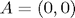 at time 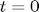 to close to point 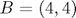 at time T. The motion takes place in the 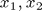 plane. Your control variables are thrust 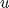 and angle of thrust 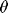. The angle is measured from the 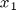 axis. To make life interesting there is large mass at (3,0) that exerts a force proportional to the inverse of the square of the distance you are from the mass. The force points toward the large mass. This force has a parameter 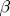. The Newtonian formulation in Cartesian coordinates, assuming your mass is 1 and there is no resistance is:
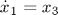
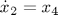
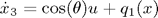
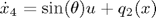
where
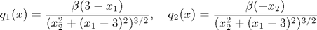
The cost functional is:
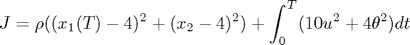
In addtion, trust is bounded, 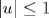, no bound on . 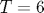.
Parameter Configurations
Remarks: 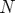,  and are chosen arbitrarily. One can vary these parameters to see its impact on the results.
and are chosen arbitrarily. One can vary these parameters to see its impact on the results.
T = 6; % terminal time N = 3; % number of control stages rho = 100; % weight on missing the final target beta = 1; % parameters of the external force x0 = zeros(5,1); % initial state ts = 0:(T/N):T; % Options for ODE & NLP Solvers optODE = odeset( 'RelTol', 1e-9, 'AbsTol', 1e-9 ); optNLP = optimset( 'LargeScale', 'off', 'GradObj','off', 'GradConstr','off',... 'DerivativeCheck', 'off', 'Display', 'iter', 'TolX', 1e-9,... 'TolFun', 1e-9, 'TolCon', 1e-9, 'MaxFunEvals',5000,... 'DiffMinChange',1e-5,'Algorithm','interior-point');
Piecewise constant control
In this section, control and are assumed to be piecewise constant in each stage of uniform length.
Remarks: Due to the nonconvexity of this problem, you may end up with a optimal point that is local. Changing the initial guess dvar0, you may get completely different solution. Thus to find global otpimal or multiple local optimal, one can make use of the multistart function from Global Optimization Toolbox. main_multistart.m contains a script as a starting point.
dvar0 = [repmat(0.5,1,N),repmat(-0.1,1,N),4,4]; % design variables contains $N$ pieces of % $u$, $N$ pieces of $\theta$ and the final position lb = -Inf(1,2*N+2); lb(1:N) = -1; % enforce lower bound on control signal $u$ ub = Inf(1,2*N+2); ub(1:N) = 1; % enforce upper bound on control signal $u$ % Sequential Approach of Dynamic Optimization [dvarO,JO] = fmincon(@(dvar) costfun1(x0,ts,dvar,rho,N,beta,optODE),... dvar0,[],[],[],[],lb,ub,... @(dvar) confun1(x0, dvar, ts, N, beta, optODE),optNLP); % plot [topt,xopt,uopt,thetaopt] = plotopt1( x0,N,ts,dvarO,beta,rho,optODE ); % animation M = animateopt( topt,xopt,uopt,thetaopt,beta,N,rho ); movie2avi(M, ['betaN_' int2str(beta) '_' int2str(N) '.avi'],... 'compression','Cinepak','fps',10)
First-order Norm of
Iter F-count f(x) Feasibility optimality step
0 9 1.524000e+001 1.076e+000 1.965e+001
1 19 9.377437e+000 3.601e+000 4.060e+001 1.206e+000
2 36 6.895389e+000 3.736e+000 8.706e+000 1.903e-001
3 53 6.653659e+000 3.622e+000 1.660e+001 2.211e-002
4 63 6.592960e+000 3.597e+000 1.868e+001 5.468e-002
5 78 6.751868e+000 3.690e+000 8.957e+000 2.405e-002
6 88 8.602348e+000 3.566e+000 1.537e+002 1.889e-001
7 100 4.129357e+001 2.993e+000 9.278e+001 1.567e+000
8 112 4.226601e+001 2.909e+000 9.492e+001 3.401e-001
9 122 4.453187e+001 1.620e+000 1.022e+002 1.048e+000
10 133 3.759971e+001 1.384e+000 3.679e+002 4.669e-001
11 147 4.582005e+001 6.931e-001 1.846e+001 4.948e-001
12 162 4.521022e+001 4.104e-001 2.101e+001 2.515e-001
13 175 5.333200e+001 3.633e-001 2.127e+001 4.422e-001
14 185 5.133203e+001 3.594e-001 1.187e+002 6.080e-001
15 195 5.352301e+001 3.626e-002 4.705e+001 8.170e-001
16 205 5.021449e+001 4.616e-002 2.800e+001 4.668e-001
17 215 4.560641e+001 7.372e-002 1.288e+002 2.386e-001
18 224 4.423655e+001 9.180e-003 8.926e+001 9.880e-002
19 236 4.359363e+001 7.345e-003 1.167e+002 8.885e-002
20 246 4.119136e+001 9.065e-003 1.324e+002 5.370e-001
21 255 3.987785e+001 1.592e-002 8.740e+001 8.321e-002
22 265 3.912088e+001 2.083e-002 7.251e+000 1.632e-001
23 274 3.865954e+001 9.783e-003 7.136e+001 8.962e-002
24 283 3.873452e+001 2.254e-003 4.549e+001 1.882e-002
25 296 3.866053e+001 8.360e-004 4.281e+001 1.457e-002
26 310 3.817942e+001 1.834e-003 4.222e+000 6.578e-002
27 322 3.808927e+001 2.001e-003 6.734e+000 1.605e-002
28 336 3.765888e+001 5.454e-004 5.128e+000 6.461e-002
29 354 3.652951e+001 3.545e-003 8.029e+000 1.158e-001
30 367 3.624417e+001 3.250e-003 1.143e+001 2.373e-002
First-order Norm of
Iter F-count f(x) Feasibility optimality step
31 384 3.336932e+001 2.050e-002 1.626e+001 2.085e-001
32 395 3.257211e+001 1.888e-002 1.909e+001 4.739e-002
33 412 2.697912e+001 2.877e-002 3.479e+001 4.484e-001
34 423 2.586951e+001 1.577e-002 3.425e+001 5.599e-002
35 442 2.335252e+001 3.223e-002 3.594e+001 4.331e-001
36 453 2.252318e+001 3.134e-002 3.521e+001 2.948e-002
37 463 1.019554e+001 3.040e-002 1.813e+001 5.099e-001
38 472 6.148550e+000 1.913e-002 1.162e+001 3.979e-001
39 481 5.869631e+000 1.967e-002 1.114e+001 9.169e-002
40 490 5.693761e+000 1.296e-002 1.201e+001 1.062e-001
41 499 5.609284e+000 4.660e-003 1.260e+001 4.562e-002
42 509 5.537935e+000 3.856e-005 1.277e+001 4.076e-002
43 519 5.501603e+000 1.702e-006 1.271e+001 1.486e-002
44 529 5.400289e+000 4.766e-005 1.058e+001 3.196e-002
45 539 5.243929e+000 1.624e-005 8.720e+000 4.521e-002
46 549 5.011358e+000 1.948e-004 6.854e+000 7.628e-002
47 559 4.868786e+000 1.598e-004 3.580e+000 5.682e-002
48 568 4.833245e+000 3.222e-004 7.751e-001 1.915e-002
49 577 4.829065e+000 1.159e-004 2.745e-001 1.074e-002
50 586 4.828938e+000 2.558e-004 8.950e-002 6.112e-003
51 595 4.828795e+000 1.332e-006 7.973e-002 1.354e-003
52 604 4.828772e+000 8.349e-006 2.849e-002 8.795e-004
53 613 4.828774e+000 5.068e-007 4.034e-003 1.947e-004
54 622 4.828774e+000 2.488e-009 4.280e-004 1.462e-005
55 631 4.828774e+000 1.896e-011 1.401e-005 1.020e-006
56 640 4.828774e+000 3.428e-012 3.724e-006 4.898e-008
57 649 4.828774e+000 4.405e-013 1.720e-007 1.104e-008
58 658 4.828774e+000 3.464e-014 1.614e-008 7.163e-010
Local minimum possible. Constraints satisfied.
fmincon stopped because the size of the current step is less than
the selected value of the step size tolerance and constraints are
satisfied to within the selected value of the constraint tolerance.
Optimal cost for N=3: 4.822457e+000
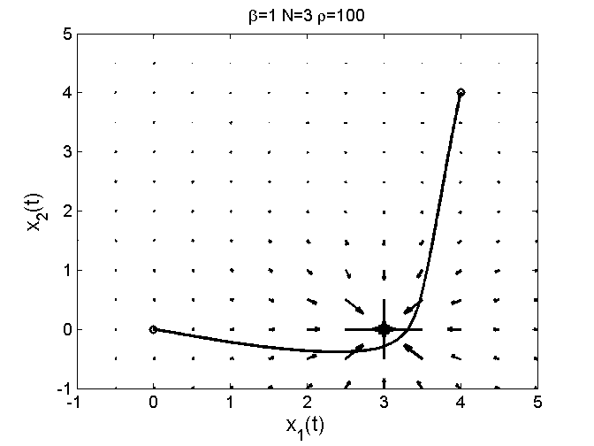 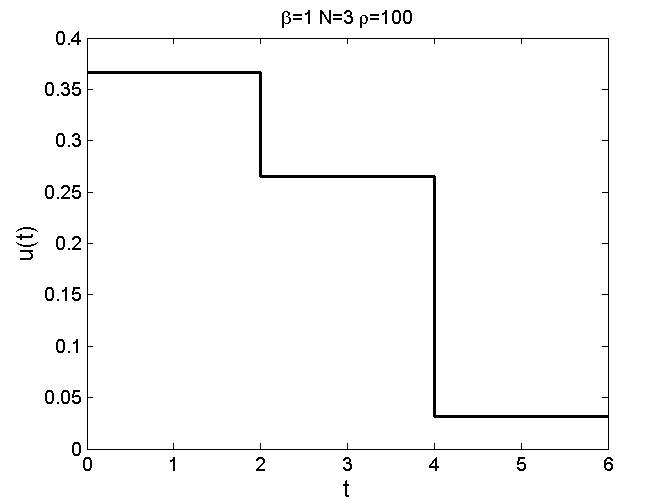 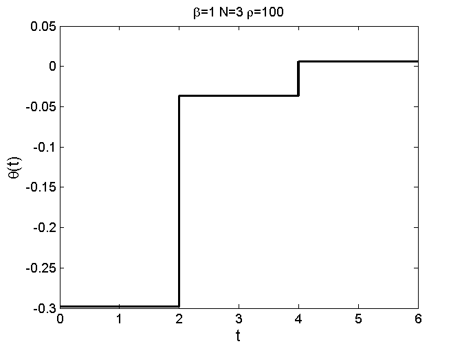 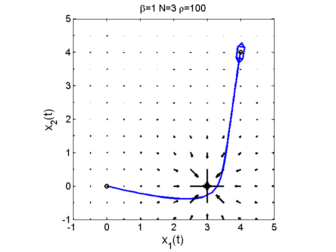 Continuous linear spline control
In this section, control and are assumed to be continuous linear spline in each stage of uniform length.
dvar0 = [repmat(0.5,1,N+1),repmat(-0.1,1,N+1),4,4]; % design variables contains $N+1$ % start and end points of control signal $u$, $\theta$ and the final % position lb = -Inf(1,2*(N+1)+2); lb(1:N+1) = -1; % enforce lower bound on control signal $u$ ub = Inf(1,2*(N+1)+2); ub(1:N+1) = 1; % enforce upper bound on control signal $u$ % Sequential Approach of Dynamic Optimization [dvarO,JO] = fmincon(@(dvar) costfun2(x0,ts,dvar,rho,N,beta,optODE),... dvar0,[],[],[],[],lb,ub,... @(dvar) confun2(x0, dvar, ts, N, beta, optODE),optNLP); % plot [topt,xopt,uopt,thetaopt] = plotopt2( x0,N,ts,dvarO,beta,rho,optODE ); % animation M = animateopt( topt,xopt,uopt,thetaopt,beta,N,rho ); movie2avi(M, ['betaN2_' int2str(beta) '_' int2str(N) '.avi'],... 'compression','Cinepak','fps',10)
First-order Norm of
Iter F-count f(x) Feasibility optimality step
0 11 1.524000e+001 1.076e+000 1.913e+001
1 23 6.628266e+000 3.580e+000 3.646e+001 1.177e+000
2 43 5.211388e+000 3.600e+000 1.863e+001 1.274e-001
3 55 3.748959e+000 3.536e+000 1.296e+001 2.791e-001
4 72 4.967599e+000 3.419e+000 6.662e+000 1.307e-001
5 84 6.928451e+000 3.181e+000 2.944e+001 2.682e-001
6 97 1.281084e+001 2.791e+000 3.654e+001 6.935e-001
7 113 1.971879e+001 1.336e+000 5.193e+001 6.732e-001
8 124 1.591789e+001 1.609e+000 1.967e+001 1.844e+000
9 137 1.119402e+001 5.256e-001 2.191e+001 1.028e+000
10 149 8.334419e+000 3.809e-001 3.054e+001 1.049e+000
11 161 6.284996e+000 1.508e-001 4.504e+000 1.119e+000
12 175 5.373304e+000 2.105e-001 3.418e+000 1.846e-001
13 188 4.901003e+000 2.147e-001 5.815e+000 5.549e-001
14 200 4.698544e+000 5.094e-002 2.636e+000 1.908e-001
15 211 4.706038e+000 3.628e-002 8.827e-001 2.800e-001
16 222 4.685036e+000 3.664e-002 6.517e-001 1.319e-001
17 233 4.677286e+000 4.450e-004 6.289e-001 9.156e-003
18 245 4.669954e+000 2.969e-004 5.368e-001 5.228e-002
19 257 4.664877e+000 1.638e-005 2.247e-001 2.060e-002
20 268 4.664341e+000 1.261e-004 4.499e-002 7.897e-003
21 280 4.664340e+000 6.198e-005 2.348e-002 7.504e-004
22 291 4.664343e+000 1.077e-006 2.003e-003 8.749e-004
23 302 4.664342e+000 1.597e-009 2.530e-004 2.403e-005
24 313 4.664342e+000 5.778e-011 8.000e-006 3.268e-006
25 324 4.664342e+000 7.390e-012 5.807e-007 3.379e-007
26 335 4.664342e+000 1.803e-013 3.412e-008 8.638e-009
Local minimum possible. Constraints satisfied.
fmincon stopped because the size of the current step is less than
the selected value of the step size tolerance and constraints are
satisfied to within the selected value of the constraint tolerance.
Optimal cost for N=3: 4.659332e+000
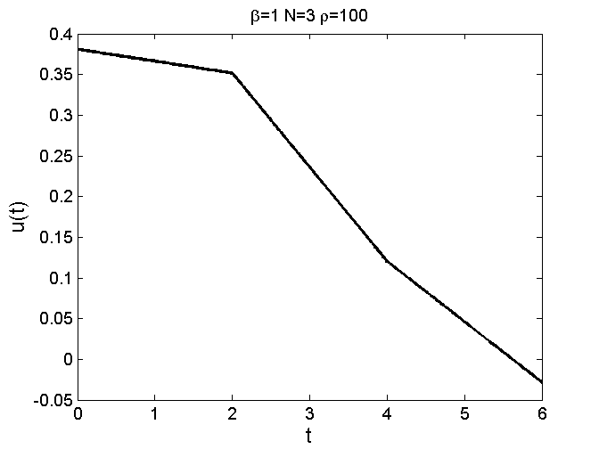 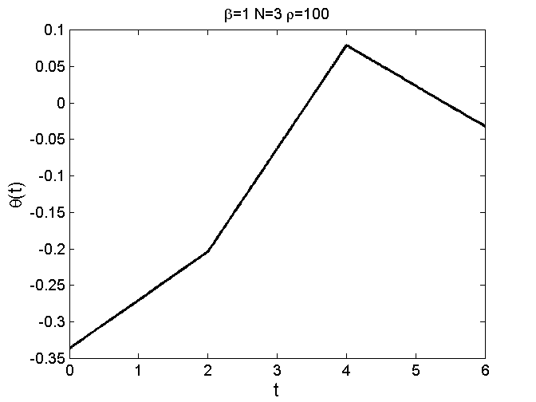 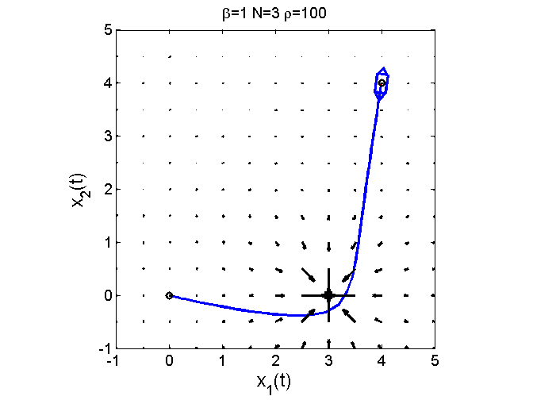